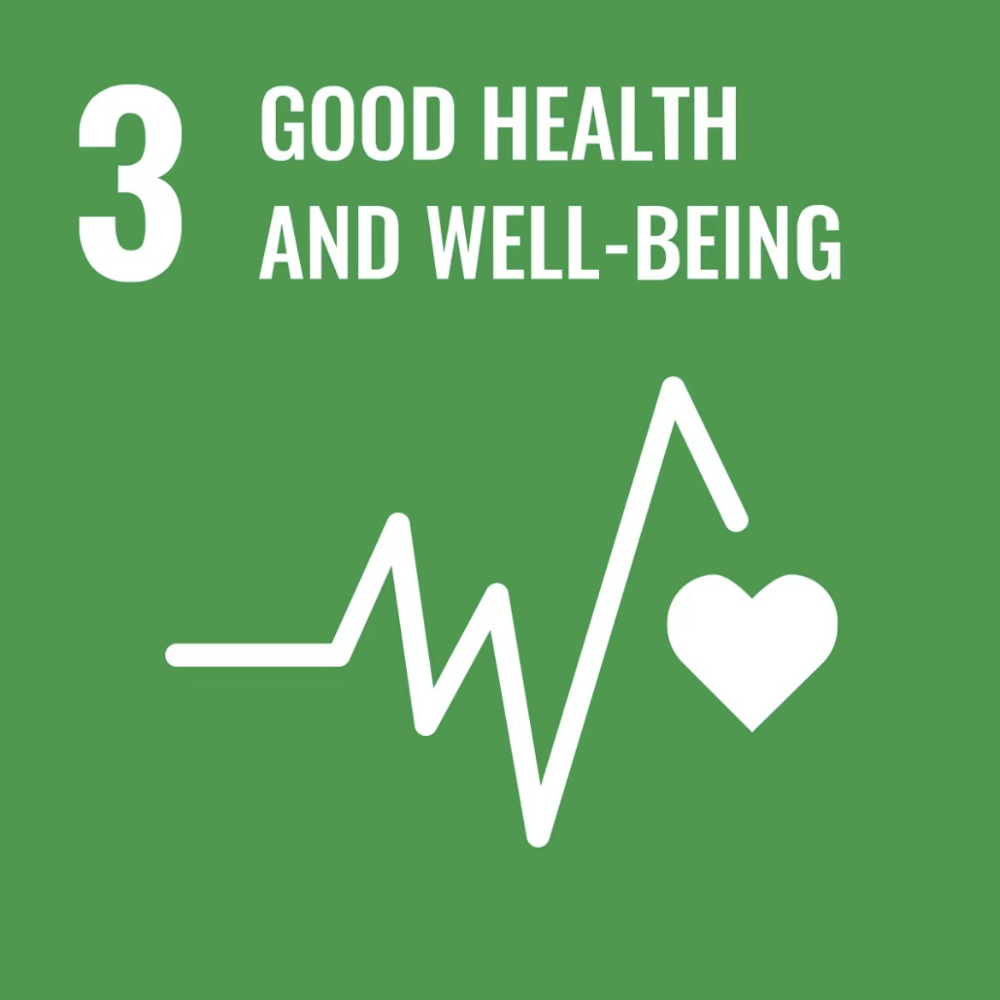
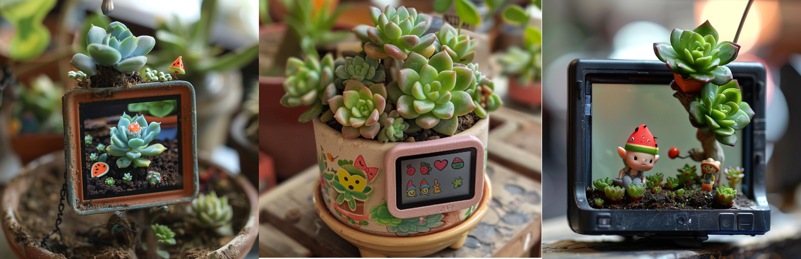
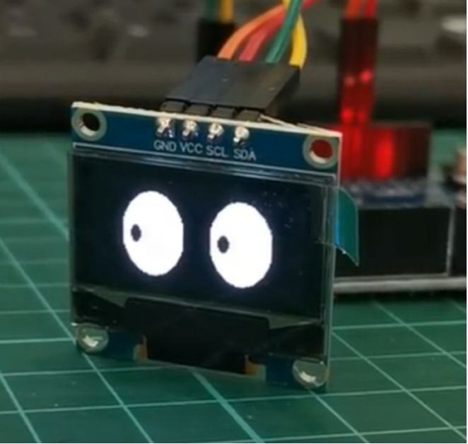
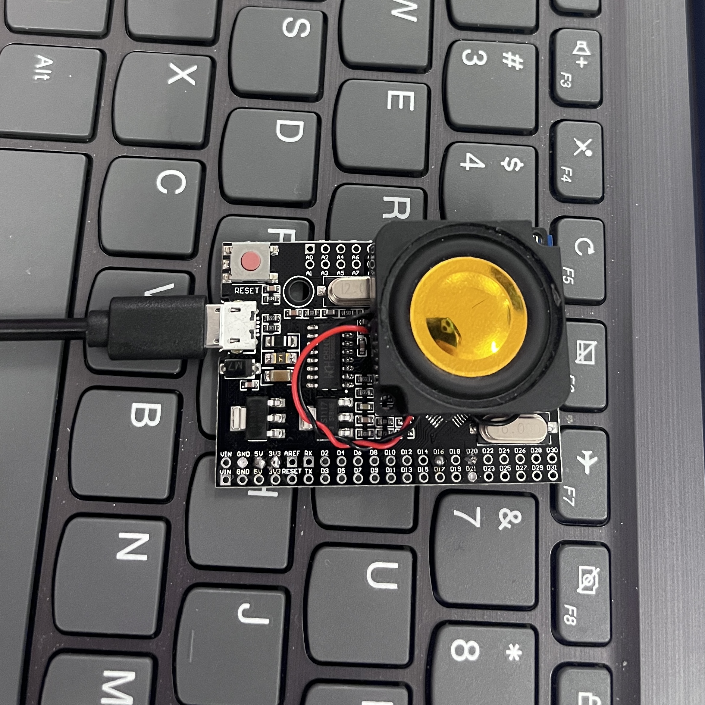
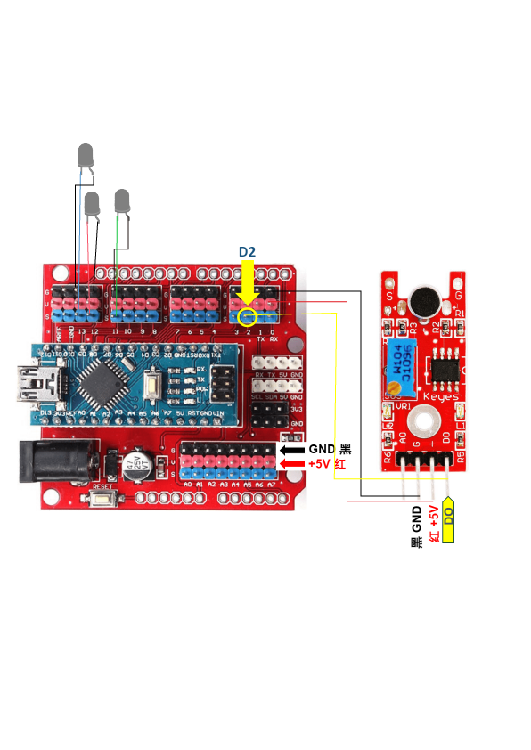

Sustainable Development Goals:Good Health And Well-Being
The third goal of the United Nations Development Goals is to ensure a healthy lifestyle and promote the well-being of people of all ages. This goal specifically includes measures such as reducing child and maternal mortality rates, popularizing basic healthcare, preventing and treating non communicable diseases, and promoting mental health and well-being. These measures aim to ensure that everyone can enjoy the guarantee of health and well-being by improving global health levels.

Problem points solved by the project
In today's society, with the acceleration of work pace and the increase of competitive pressure, people generally face pressure in work and study. This kind of pressure not only affects people's physical health, but more importantly, it has a serious impact on their mental health. Many people feel lonely, anxious, depressed, and lack emotional support and companionship. To alleviate this problem, we have designed an intelligent potted plant based on the third United Nations Sustainable Development Goal.
Pre- design
Idea sketch
This is an intelligent potted plant with a LCD screen and sound sensor, attracting people with its cute appearance.

Major function
1. The visual effect of green plants: Green plants can alleviate visual fatigue, make the work environment more comfortable, make the mood more joyful, improve focus, and increase work efficiency.
2. Relaxation effect of sound: The randomly played prompt sound can help users relax their body and mind, and relieve stress.
3. Psychological stress relief: The dynamic "small expressions" displayed on the screen can convey positive feedback to the user.
Users control the lighting of LED lights by clapping and blowing air. Through the process of interactive games, users can shift their attention and reduce work pressure.

Technical implementation
Sound sensor - microphone:
Users can control the LED lights to turn off by blowing air
Horn:
Vibration sensor receives signal, horn emits random statement

Interaction mode
Palm response: When the user claps, the electronic potted plant will light up, providing visual feedback. Blow air into the microphone and the light goes out.

Touch response: When the user touches a plant, different expressions will be displayed on the LCD screen, accompanied by different sound effects.